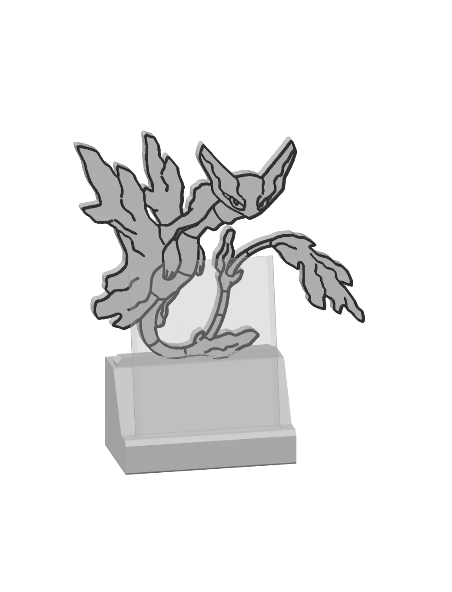
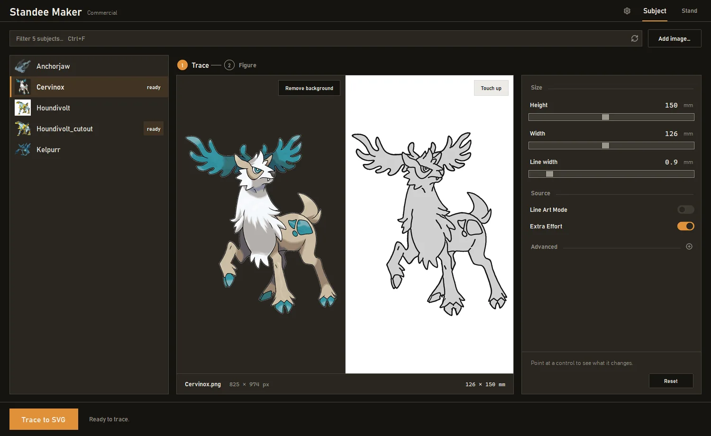
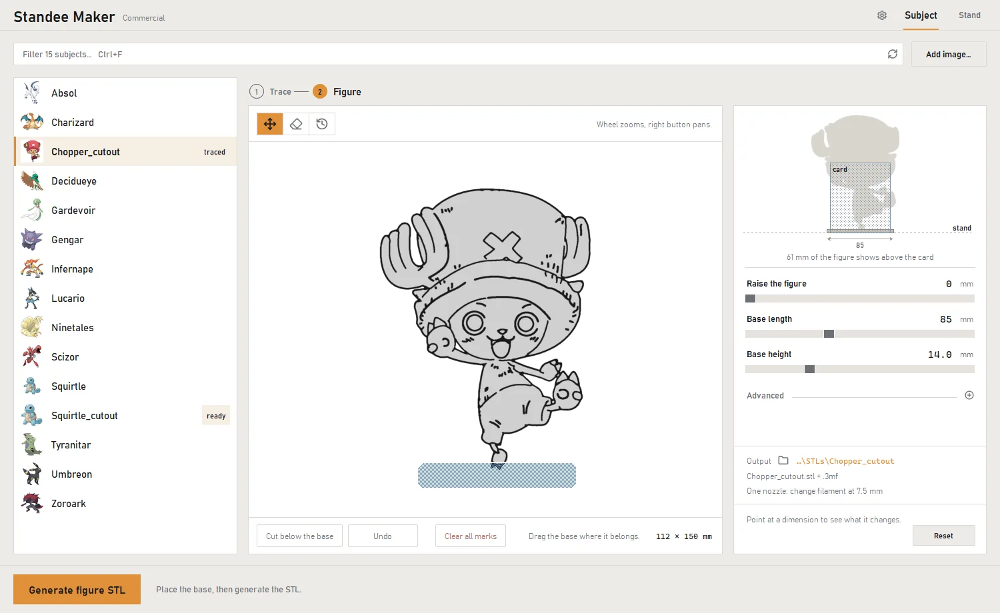
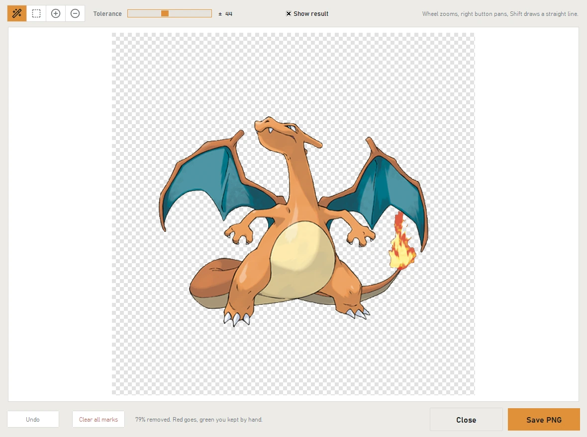
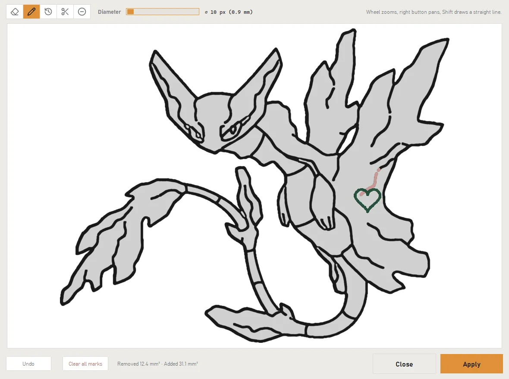

Standee Maker turns any image into a 3D-printable figure and into the stand that holds it upright next to the card in its toploader.
The chain
Three states of the same part
Both outlines come out with the same bounding box, so they sit on top of each other without realigning them; the solid arrives with the base already welded under its feet.

Drag to turn itChopper_cutoutimage · 604 × 799 px
The interface
How Standee Maker works
Pick an image: it becomes a part in two steps, Trace that reads the drawing and Figure that extrudes it and mounts it.



The image on the left, what comes out of it on the right, at the same height.
Two work windows
When the image won’t cooperate
An image can carry problems that spoil the conversion. The two windows below are there to put them right.

Remove background
The wand takes the background by colour, the box says where the subject is, the two brushes fix the rest by hand. Here it is two clicks: the background, and the pocket closed between the wing and the tail, which would otherwise stay.

Touch up
Eraser and pencil on the line art, before it becomes a solid. Shift draws a straight line.
Tutorial
One Squirtle, from the image to the painted stand
Every step in the real program, on a real subject: the image goes in on a white background and comes out as a figure standing next to its card. Nothing is skipped, the touch-ups included, and every screen is marked where to look.
6 steps, from the image to the finished piece · arrow keys to move through them
Twelve subjects, no touch-ups
Taken from the library and traced as they were
All of them on the starting values, none corrected by hand. Drag the amber line to uncover the trace under the image.
Licence
Two editions, the same program
The only difference is in the licence, not in the code: there is nothing to unlock, and both editions have exactly the same features. I never liked the usual formula. Everyone is out to sell you a recurring service, so you spend more without noticing. For Standee Maker you pay once and the software is yours for good.
€19.99once
- Personal, educational and in-house business use
- You may give away the parts you print
- Two computers per licence, movable
- You may not sell the parts, or make them to order
The program is identical to the Commercial one.
€99.99once
- Everything in Maker
- Sell the parts you print, made to order included
- Use them in a business that sells goods or services
- Two computers per licence, movable
Questions